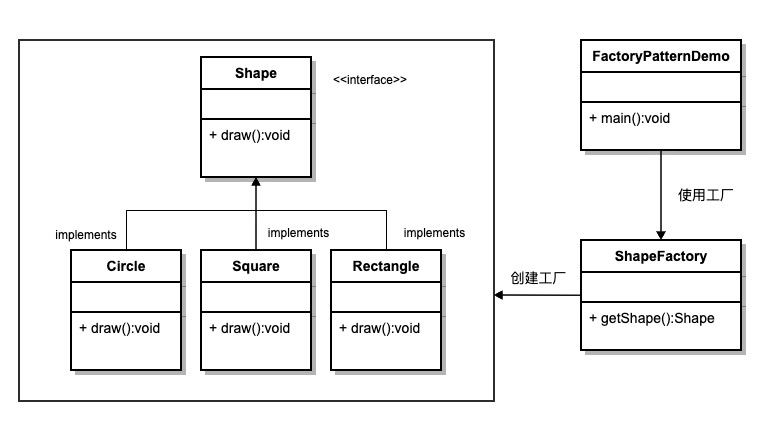

工厂模式
工厂模式（Factory Pattern）是 Java 中最常用的设计模式之一，它提供了一种创建对象的方式，使得创建对象的过程与使用对象的过程分离。
工厂模式提供了一种创建对象的方式，而无需指定要创建的具体类。
通过使用工厂模式，可以将对象的创建逻辑封装在一个工厂类中，而不是在客户端代码中直接实例化对象，这样可以提高代码的可维护性和可扩展性。
工厂模式的类型
1、简单工厂模式（Simple Factory Pattern）：
- 简单工厂模式不是一个正式的设计模式，但它是工厂模式的基础。它使用一个单独的工厂类来创建不同的对象，根据传入的参数决定创建哪种类型的对象。
2、工厂方法模式（Factory Method Pattern）：
- 工厂方法模式定义了一个创建对象的接口，但由子类决定实例化哪个类。工厂方法将对象的创建延迟到子类。
3、抽象工厂模式（Abstract Factory Pattern）：
- 抽象工厂模式提供一个创建一系列相关或互相依赖对象的接口，而无需指定它们具体的类。
概要
意图
定义一个创建对象的接口，让其子类决定实例化哪一个具体的类。工厂模式使对象的创建过程延迟到子类。
主要解决
接口选择的问题。
何时使用
当我们需要在不同条件下创建不同实例时。
如何解决
通过让子类实现工厂接口，返回一个抽象的产品。
关键代码
对象的创建过程在子类中实现。
应用实例
- 汽车制造：你需要一辆汽车，只需从工厂提货，而不需要关心汽车的制造过程及其内部实现。
- Hibernate：更换数据库时，只需更改方言（Dialect）和数据库驱动（Driver），即可实现对不同数据库的切换。
优点
- 调用者只需要知道对象的名称即可创建对象。
- 扩展性高，如果需要增加新产品，只需扩展一个工厂类即可。
- 屏蔽了产品的具体实现，调用者只关心产品的接口。
缺点
每次增加一个产品时，都需要增加一个具体类和对应的工厂，使系统中类的数量成倍增加，增加了系统的复杂度和具体类的依赖。
使用场景
- 日志记录：日志可能记录到本地硬盘、系统事件、远程服务器等，用户可以选择记录日志的位置。
- 数据库访问：当用户不知道最终系统使用哪种数据库，或者数据库可能变化时。
- 连接服务器的框架设计：需要支持 "POP3"、"IMAP"、"HTTP" 三种协议，可以将这三种协议作为产品类，共同实现一个接口。
注意事项
工厂模式适用于生成复杂对象的场景。如果对象较为简单，通过 new 即可完成创建，则不必使用工厂模式。使用工厂模式会引入一个工厂类，增加系统复杂度。
结构
工厂模式包含以下几个主要角色：
- 抽象产品（Abstract Product）：定义了产品的共同接口或抽象类。它可以是具体产品类的父类或接口，规定了产品对象的共同方法。
- 具体产品（Concrete Product）：实现了抽象产品接口，定义了具体产品的特定行为和属性。
- 抽象工厂（Abstract Factory）：声明了创建产品的抽象方法，可以是接口或抽象类。它可以有多个方法用于创建不同类型的产品。
- 具体工厂（Concrete Factory）：实现了抽象工厂接口，负责实际创建具体产品的对象。
实现
我们将创建一个Shape接口和实现Shape接口的实体类。下一步是定义工厂类ShapeFactory。
FactoryPatternDemo类使用ShapeFactory来获取Shape对象。它将向ShapeFactory传递信息（CIRCLE / RECTANGLE / SQUARE），以便获取它所需对象的类型。

步骤 1
创建一个接口:
Shape.java
步骤 2
创建实现接口的实体类。
Rectangle.java
Square.java
Circle.java
步骤 3
创建一个工厂，生成基于给定信息的实体类的对象。
ShapeFactory.java
步骤 4
使用该工厂，通过传递类型信息来获取实体类的对象。
FactoryPatternDemo.java
步骤 5
执行程序，输出结果：
Inside Circle::draw() method. Inside Rectangle::draw() method. Inside Square::draw() method.
其他相关文章
其他扩展
冷锋SJ记忆
son***e_xuan@126.com
使用反射机制可以解决每次增加一个产品时，都需要增加一个对象实现工厂的缺点
public class ShapeFactory { public static Object getClass(Class<?extends Shape> clazz) { Object obj = null; try { obj = Class.forName(clazz.getName()).newInstance(); } catch (ClassNotFoundException e) { e.printStackTrace(); } catch (InstantiationException e) { e.printStackTrace(); } catch (IllegalAccessException e) { e.printStackTrace(); } return obj; } }使用的使用采用强制转换
这样就只需要一个对象实现工厂
冷锋SJ记忆
son***e_xuan@126.com
tongyu
tyy***28@sohu.com
public class ShapeFactory { public static <T> T getClass(Class<? extends T> clazz) { T obj = null; try { obj = (T) Class.forName(clazz.getName()).newInstance(); } catch (ClassNotFoundException e) { e.printStackTrace(); } catch (InstantiationException e) { e.printStackTrace(); } catch (IllegalAccessException e) { e.printStackTrace(); } return obj; } }省略类型强制转换，支持多态
tongyu
tyy***28@sohu.com
dugw
630***862@qq.com
在上面的基础上进一步扩展，针对多个接口实现一个公共的工厂类：
public class ObjectFactory { public <T> Object getObject(Class<T> clazz) { if (clazz == null ) { return null; } Object obj = null; try { obj = Class.forName(clazz.getName()).newInstance(); } catch (InstantiationException | IllegalAccessException | ClassNotFoundException e) { e.printStackTrace(); } return obj; } }dugw
630***862@qq.com
佐手
476***586@qq.com
在jdk9中直接使用泛型的newInstance方法已经过时。重写的getClass()方法如下：
public <T> T getClass(Class<? extends T> clazz) { T obj = null; try { obj = clazz.getDeclaredConstructor().newInstance(); } catch (ReflectiveOperationException e) { e.printStackTrace(); } return obj; }佐手
476***586@qq.com
1310337382@qq.com
131***7382@qq.com
public class ShapeFactory { //使用 getShape 方法获取形状类型的对象 public Shape getShape(String shapeType){ if(shapeType == null){ return null; } if(shapeType.equalsIgnoreCase("CIRCLE")){ return new Circle(); } else if(shapeType.equalsIgnoreCase("RECTANGLE")){ return new Rectangle(); } else if(shapeType.equalsIgnoreCase("SQUARE")){ return new Square(); } return null; } }创建的这个工厂，这个创建函数，没能看出有什么特别的，还特别繁琐，如果IShape类太多，那么if else语句也将增加太多，不好维护，与其这样写，还不如改成如下：
public class ShapeFactory { //使用 getShape 方法获取形状类型的对象 public Shape getShape(Class<?> clazz){ try { return (IShape) clazz.getConstructor().newInstance(); } catch (InstantiationException e) { e.printStackTrace(); } catch (IllegalAccessException e) { e.printStackTrace(); } catch (IllegalArgumentException e) { e.printStackTrace(); } catch (InvocationTargetException e) { e.printStackTrace(); } catch (NoSuchMethodException e) { e.printStackTrace(); } catch (SecurityException e) { e.printStackTrace(); } return null; } }这样写在创建时也不用知道具体的类别，易于管理维护。
1310337382@qq.com
131***7382@qq.com
kusirp21
hoo***@hotmail.com
楼上几位真心会开玩笑！
其实使用反射是一种不错的办法，但反射也是从类名反射而不能从类反射！
先看一下工厂模式是用来干什么的——属于创建模式，解决子类创建问题的。换句话来说，调用者并不知道运行时真正的类名，只知道从“Circle"可以创建出一个shape接口的类，至于类的名称是否叫'Circle"，调用者并不知情。所以真正的对工厂进行扩展的方式（防止程序员调用出错）可以考虑使用一个枚举类（防止传入参数时，把circle拼写错误）。
如果调用者参肯定类型是Circle的话，那么其工厂没有存在的意义了！
比如 IShape shape = new Circle();这样不是更好？也就是说调用者有了Circle这个知识是可以直接调用的，根据DP（迪米特法则）其实调用者并不知道有一个Circle类的存在，他只需要知道这个IShape接口可以计算圆面积，而不需要知道；圆这个类到底是什么类名——他只知道给定一个”circle"字符串的参数,IShape接口可以自动计算圆的面积就可以了！
其实在.net类库中存在这个模式的的一个典型的。但他引入的另一个概念“可插入编程协议”。
那个就是WebRequest req = WebRequest.Create("http://ccc......");可以自动创建一个HttpWebRequest的对象，当然，如果你给定的是一个ftp地址，他会自动创建一个FtpWebRequest对象。工厂模式中着重介绍的是这种通过某个特定的参数，让你一个接口去干对应不同的事而已！而不是调用者知道了类！
比如如果圆的那个类名叫"CircleShape“呢？不管是反射还是泛型都干扰了你们具体类的生成！其实这个要说明的问题就是这个，调用者（clinet)只知道IShape的存在，在创建时给IShape一个参数"Circle",它可以计算圆的面积之类的工作，但是为什么会执行这些工作，根据迪米特法则，client是不用知道的。
我想问一下那些写笔记的哥们，如果你们知道了泛型，那么为什么不直接使用呢？干吗还需要经过工厂这个类呢？不觉得多余了吗？
如果，我只是说如果，如果所有从IShape继承的类都是Internal类型的呢？而client肯定不会与IShape一个空间！这时，你会了现你根本无法拿到这个类名！
Create时使用注册机制是一种简单的办法，比如使用一个枚举类，把功能总结到一处。而反射也是一种最简单的办法，调用者输入的名称恰是类名称或某种规则时使用，比如调用者输入的是Circle，而类恰是CircleShape，那么可以通过输入+”Shape"字符串形成新的类名，然后从字符串将运行类反射出来！
工厂的创建行为，就这些作用，还被你们用反射或泛型转嫁给了调用者（clinet)，那么，这种情况下，要工厂类何用？！
kusirp21
hoo***@hotmail.com
罗
107***8153@qq.com
参考地址
使用枚举优化
public enum Factory { CIRCLE(new Circle(),"CIRCLE"), RECTANGLE(new Rectangle(),"RECTANGLE"), SQUARE(new Square(),"SQUARE"); // 成员变量 private Shape shape; private String name; // 普通方法 public static Shape getShape(String name) { for (Factory c : Factory.values()) { if (c.name == name) { return c.shape; } } return null; } // 构造方法 private Factory(Shape shape, String name) { this.shape = shape; this.name = name; } public String getName() { return name; } public Shape getShape() { return shape; } public void setShape(Shape shape) { this.shape = shape; } public void setName(String name) { this.name = name; } } /*使用枚举类*/ Factory.getShape("CIRCLE").draw(); Factory.getShape("RECTANGLE").draw(); Factory.getShape("SQUARE").draw();罗
107***8153@qq.com
参考地址
往生在世
493***942@qq.com
使用类名增加耦合性，那就需要使用常量或者枚举类解耦合。
// 接口 增加常量或枚举 public interface Shape { static String SHAPE_YUAN = Yuan.class.getName(); static String SHAPE_FANG = Fang.class.getName(); static String SHAPE_CHANG = Chang.class.getName(); void draw(); } // 工厂方法 public class Factory { public static Shape getShape2(String type) { try { return (Shape) Class.forName(type).getDeclaredConstructor().newInstance(); } catch (InstantiationException e) { e.printStackTrace(); } catch (IllegalAccessException e) { e.printStackTrace(); } catch (IllegalArgumentException e) { e.printStackTrace(); } catch (InvocationTargetException e) { e.printStackTrace(); } catch (NoSuchMethodException e) { e.printStackTrace(); } catch (SecurityException e) { e.printStackTrace(); } catch (ClassNotFoundException e) { e.printStackTrace(); } return null; } } // 调用 Shape s21 = Factory.getShape2(Shape.SHAPE_CHANG); s21.draw(); Shape s22 = Factory.getShape2(Shape.SHAPE_FANG); s22.draw(); Shape s23 = Factory.getShape2(Shape.SHAPE_YUAN); s23.draw();往生在世
493***942@qq.com
牟春平
muc***ping@gmail.com
@kusirp21讲得很好，使用枚举类优化。
增加枚举类
public enum ShapeType{ CIRCLE, RECTANGLE, SQUARE }修改工厂类的工厂方法，个人建议工厂方法应该是静态方法或者采用单例模式：
public class ShapeFactory{ public static Shape getShape(ShapeType type){ switch(type){ case CIRCLE: return new Circle(); case RECTANGLE: return new Rectangle(); case SQUARE: return new Square(); default: throw new UnknownTypeException(); } } }上面用到的类和接口与课程中的一样。
最后是使用示例：
public class FactoryPatternDemo { public static void main(String[] args) { //获取 Circle 的对象，并调用它的 draw 方法 Shape shape1 = ShapeFactory.getShape(ShapeType.CIRCLE); //调用 Circle 的 draw 方法 shape1.draw(); //获取 Rectangle 的对象，并调用它的 draw 方法 Shape shape2 = ShapeFactory.getShape(ShapeType.RECTANGLE); //调用 Rectangle 的 draw 方法 shape2.draw(); //获取 Square 的对象，并调用它的 draw 方法 Shape shape3 = ShapeFactory.getShape(ShapeType.SQUARE); //调用 Square 的 draw 方法 shape3.draw(); } }牟春平
muc***ping@gmail.com
msyms
934***531@qq.com
参考地址
一、一句话概括工厂模式
二、生活中的工厂模式
msyms
934***531@qq.com
参考地址
李金晨
231***8763@qq.com
工厂模式实例：
package 工厂设计模式; public class Factory_pattern { public static void main(String[] args) { Factory facortoy = new Factory(); Person zgr = facortoy.getInstance("zgr"); zgr.eat(); } } //人类都具有吃方法 interface Person{ public void eat(); } //中国人 class zgr implements Person{ @Override public void eat() { System.out.println("中国人吃饭用筷子"); } } //印度人 class ydr implements Person{ @Override public void eat() { System.out.println("印度人用手吃饭"); } } //美国人 class mgr implements Person{ @Override public void eat() { System.out.println("美国人用刀和叉子吃饭"); } } interface Instance{ public Person getInstance(String str); } class Factory implements Instance{ @Override public Person getInstance(String str) { if(str.equals("zgr")) { return new zgr(); }else if(str.equals("ydr")) { return new ydr(); }else if(str.equals("mgr")) { return new mgr(); }else { return null; } } }李金晨
231***8763@qq.com
Robbie
g00***00@126.com
根据上面@kusirp21枚举的思路实现的工厂模式:
public enum ShapeType { CIRCLE(new Circle()), RECTANGLE(new Rectangle()), SQUARE(new Square()); private Shape shape; private ShapeType(Shape shape) { this.shape = shape; } public Shape getShape() { return shape; } } public class Test { public static void main(String[] args) { ShapeType.CIRCLE.getShape().draw(); } }Robbie
g00***00@126.com
阿燃
357***211@qq.com
接口定义实现类的规范，通过反射工厂类进行生产，完整的一个过程就是。
接口类：
public interface Shape { void draw(); }实现类：
public class Rectangle implements Shape{ @Override public void draw() { System.out.println("Rectangle"); } } public class Square implements Shape{ @Override public void draw() { System.out.println("Square"); } }工厂类:
public class ShapeFactory{ public static Shape getClass(Class<?extends Shape> clazz) { Shape o = null; try { o = (Shape) Class.forName(clazz.getName()).newInstance(); } catch (InstantiationException e) { e.printStackTrace(); } catch (IllegalAccessException e) { e.printStackTrace(); } catch (ClassNotFoundException e) { e.printStackTrace(); } return o; } } }给定条件产出：
public class FactoryModeImpl { public static void main(String[] args) { Shape shape = ShapeFactory.getClass(Square.class); shape.draw(); } }阿燃
357***211@qq.com
杨轻帆
294***4412@qq.com
在工厂模式中，我们在创建对象时不会对客户端暴露创建逻辑，并且是通过使用一个共同的接口来指向新创建的对象。
此练习中我写的工厂是通过一个方法（买狗）来调用相应对象创建语句去创建不同的（狗）对象；用子对象中的重写方法验证父对象被赋值后调用的方法是属于谁的。
具体的解释在代码中已经标明:
import java.util.Scanner; //多态 public class Test2 { public static void main(String[] args) { Factory no1=new Factory();//创建工厂对象 no1.maigou();//调用工厂的方法（买狗） } } class Factory{ public void maigou(){ Dog1 dog=new Dog1(); System.out.println("要买什么狗？"); Scanner sc=new Scanner(System.in); String str=sc.nextLine(); switch(str){ default: System.out.println("没有这玩意儿"); break; case "金毛" : dog=new Jinmao(); dog.show(); break;//将子类赋值给父类并调用重写后的方法 case "二哈" : dog=new Erha(); dog.show();//将子类赋值给父类并调用重写后的方法 } } } class Dog1{ //这里因为Dog类在其他包里建过了，为了避免冲突，取名Dog1 public void show(){ System.out.println("这是一只狗"); } } class Erha extends Dog1{ public void show(){ System.out.println("这是一只二哈");//通过重写函数show验证dog对象调用的方法是谁的 } } class Jinmao extends Dog1{ public void show(){ System.out.println("这是一只金毛");//通过重写函数show验证dog对象调用的方法是谁的 } }杨轻帆
294***4412@qq.com
BertYY
zge***an@hotmail.com
python 代码实现示例：
class Shape(object): def draw(self): pass class RectangleImplementsShape(Shape): def __init__(self): print("this relalize Interface") def draw(self): print("Inside Rectangle::draw() method.") class SquareImplementsShape(Shape): def __init__(self): print("this relalize Interface") def draw(self): print("Inside Square::draw() method.") class CircleImplementsShape(Shape): def __init__(self): print("this relalize Interface") def draw(self): print("Inside Circle::draw() method.") class ShapeFactory(object): def __init__(self): print("ShapeFactory init") def getShape(self,method): if method.lower() == 'rectangle': return RectangleImplementsShape() if method.lower() == 'square': return SquareImplementsShape() if method.lower() == 'circle': return CircleImplementsShape() shapeFactory = ShapeFactory() shap1 = shapeFactory.getShape('Rectangle') shap2 = shapeFactory.getShape('Square') shap3 = shapeFactory.getShape('Circle') shap1.draw() shap2.draw() shap3.draw()BertYY
zge***an@hotmail.com
Siskin.xu
sis***@sohu.com
Python 方式：
# Python原生默认不支持接口，默认多继承，所有的方法都必须不能实现 from abc import abstractmethod,ABCMeta # 声明一个抽象接口 class Shape(metaclass=ABCMeta): @abstractmethod def draw(self): pass # 三个形状继承实现 Shape 接口 class Rectangle(Shape): def draw(self): print("Inside Ractangle.draw method") class Square(Shape): def draw(self): print("Inside Square.draw method") class Circle(Shape): def draw(self): print("Inside Circle.draw method") # 创建一个工厂 class ShapeFactory(): def getShape(self,shapeType): if shapeType == None : return None elif shapeType.upper() == "CIRCLE": return Circle() elif shapeType.upper() == "RECTANGLE": return Rectangle() elif shapeType.upper() == "SQUARE": return Square() return None # 输出 if __name__ == '__main__': shapeFactory = ShapeFactory() shape1 = shapeFactory.getShape("CIRCLE") shape1.draw() shape2 = shapeFactory.getShape("RECTANGLE") shape2.draw() shape3 = shapeFactory.getShape("SQUARE") shape3.draw()Siskin.xu
sis***@sohu.com
清露凝尘
575***823@qq.com
看了大家的笔记，差点误入歧途，感谢 @kusirp21的当头棒喝。取长补短，将工厂方法中的判断，提取到枚举中， 工厂方法使用反射创建对象。
以下是代码：
public interface Shape { void draw();} public class Circle implements Shape { @Override public void draw() { System.out.println("圆形"); } } public class Rectangle implements Shape { @Override public void draw() { System.out.println("矩形"); } } public class Square implements Shape { @Override public void draw() { System.out.println("正方形"); } } public enum ShapeTypeEnum { CIRCLE("com.example.factorymethods.Circle"), SQUARE("com.example.factorymethods.Square"), RECTANGLE("com.example.factorymethods.Rectangle"); private String className; ShapeTypeEnum(String className) { this.className = className; } public String getClassName() { return className; } } public class ShapeFactory { private ShapeFactory(){} /** * * 创建不同的图形实例 * @param shapeTypeEnum * @return */ public static Shape createShape(ShapeTypeEnum shapeTypeEnum){ Shape shape = null; String className = shapeTypeEnum.getClassName(); try { Class clazz = Class.forName(className); shape = (Shape)clazz.newInstance(); } catch (InstantiationException | IllegalAccessException | ClassNotFoundException e) { e.printStackTrace(); } return shape; } } public class FactoryMethodsDemo { public static void main(String[] args) { ShapeFactory.createShape(ShapeTypeEnum.CIRCLE).draw(); ShapeFactory.createShape(ShapeTypeEnum.SQUARE).draw(); ShapeFactory.createShape(ShapeTypeEnum.RECTANGLE).draw(); } }清露凝尘
575***823@qq.com
不在窝里
yzq***p@163.com
清露凝尘的做法非常好，我借鉴之后，减少了一下代码量，个人觉得效果达到，编码也少，这样挺好。
以下修改了异常抛出结果，简单做了下拼接。
public interface shape { //绘画接口 void draw(); } public class Rectangle implements shape{ @Override public void draw() { // TODO Auto-generated method stub System.out.println("restangle中的绘画"); } } public class Square implements shape{ @Override public void draw() { // TODO Auto-generated method stub System.out.println("Square中的绘画"); } } package com.yzq.pattren.createPattern.factoryPattern; public class ShapeFactory { //优化getShape public shape getPlusShape(String shapeType) { // TODO Auto-generated method stub try { //forName返回与给定的字符串名称相关联类或接口的Class对象 Class clazz = Class.forName(shapeType); return (com.yzq.pattren.createPattern.factoryPattern.shape) clazz.newInstance(); } catch (Exception e) { // TODO Auto-generated catch block e.printStackTrace(); } return null; } }测试类：
public class TestCreatePattern { public static void main(String[] args) { //工厂模式 ShapeFactory shapeFactory = new ShapeFactory(); //配置一个BaseFactory，指定范围查找类名。 String BaseFactory = "com.yzq.pattren.createPattern.factoryPattern."; //Square，Rectangle代表用户提交的选择框的信息 shapeFactory.getPlusShape(BaseFactory+"Square").draw(); shapeFactory.getPlusShape(BaseFactory+"Rectangle").draw(); } }不在窝里
yzq***p@163.com
蘑菇力
168***7348@qq.com
反射很方便。
//示例： //创建一个Car服务接口 interface CarService{ //比如为Car创建一个run()方法 void run(); } //创建一个工厂类 public class CarFactory{ public static void main(String []args){ try{ //创建Properties对象 Properties properties = new Properties(); //类加载器读取配置文件 InputStream is = CarFactory.class.getClassLoader().getResourceAsStream("car.properties"); properties.load(is); is.close(); //通过Entry遍历<迭代Entry> for (Entry<Object, Object> entry : properties.entrySet()) { //动态创建实现类对象,只要在配置文件中的类，都会创建并运行 CarService cs = (CarService) Class.forName((String) entry.getValue()).newInstance(); //接口回调 cs.run(); } }catch(Exception e){ e.printStackTrace(); } } } //创建类实现CarService接口 class BMW implements CarService{ String name = "BMW"; public void run(){ System.out.println(name+"正在路上飞驰。。。"); } } public class Benz implements CarService { String name = "Benz"; public void run(){ System.out.println(name+"正在路上飞驰。。。"); } } //创建car.properties文件,将实现类的全限定名放在配置文件中 BMW=com.runoob.car.BMW Bean=com.runoob.Benz以上这种方法，便于维护，创建对象时，只需要该类实现Service接口，并在配置文件中添加该类的全限定名即可。类似于插件开发。
蘑菇力
168***7348@qq.com
fanjinzhao
165***6686@qq.com
在逻辑代码中应避免出现"魔法值"。
结合之前几位的逻辑，我将反射和枚举类结合一起并完善，写出下面代码：
public class SimpleFactory { public static void main(String[] args) { Animal dog = factory("Dog"); assert dog != null; dog.run(); Animal cat = factory("Cat"); assert cat != null; cat.run(); } public static Animal factory(String simpleName){ //获取枚举类中对应的全类名 simpleName = AnimalEnum.getName(simpleName); if(simpleName == null || simpleName.length() <= 0){ return null; } try { return (Animal) Class.forName(simpleName).getConstructor().newInstance(); } catch (Exception e) { e.printStackTrace(); } return null; } } //动物接口 interface Animal{ void run(); } //狗实现类 class Dog implements Animal{ public Dog() {} @Override public void run() { System.out.println("小狗跑"); } } //猫实现类 class Cat implements Animal{ public Cat() {} @Override public void run() { System.out.println("小猫跑"); } } //动物枚举 enum AnimalEnum{ DOG("Dog",Dog.class.getName()), CAT("Cat",Cat.class.getName()); private final String simpleName; private final String name; AnimalEnum(String simpleName, String name) { this.simpleName = simpleName; this.name = name; } public String getSimpleName() { return simpleName; } public String getName() { return name; } //获通过动物简易名获取动物全类名 public static String getName(String simpleName){ for( AnimalEnum animalEnum : AnimalEnum.values()){ if(animalEnum.getSimpleName().equalsIgnoreCase(simpleName)){ return animalEnum.getName(); } } return null; } }fanjinzhao
165***6686@qq.com
mm
mfx***0@live.cn
C++ 的实现方法：
#include <iostream> using std::string; using std::cout; using std::endl; class Shape{ public: virtual void draw() { cout<<"this is virtual fun,cannot do something."<<endl; }; static Shape* getShape(string shapeType); }; class Rectangle : public Shape{ public: void draw(){ cout<<"Inside Rectangle::draw() method."<<endl; } }; class Square : public Shape{ public: void draw(){ cout<<"Inside Square::draw() method."<<endl; } }; class Circle : public Shape{ public: void draw(){ cout<<"Inside Circle::draw() method."<<endl; } }; Shape* Shape::getShape(string shapeType){ if(shapeType == "CIRCLE"){ return new Circle(); } else if(shapeType == "RECTANGLE"){ return new Rectangle(); } else if(shapeType == "SQUARE" ){ return new Square(); } return new Shape(); } int main(){ Shape* shape1=NULL; shape1 = Shape::getShape("CIRCLE"); shape1->draw(); shape1 = Shape::getShape("RECTANGLE"); shape1->draw(); shape1 = Shape::getShape("SQUARE"); shape1->draw(); return 0; }mm
mfx***0@live.cn
squid233
513***220@qq.com
改良版 C++ 方式：
#include <iostream> #include <algorithm> using namespace std; class Shape { public: virtual void draw() = 0; }; class Rectangle : public Shape { public: void draw() { cout << "Inside Rectangle::draw() method." << endl; } }; class Square : public Shape { public: void draw() { cout << "Inside Square::draw() method." << endl; } }; class Circle : public Shape { public: void draw() { cout << "Inside Circle::draw() method." << endl; } }; class ShapeFactory { public: void getShape(string shapeType, Shape** shape) { string type = shapeType; #ifdef __GNUC__ transform(type.begin(), type.end(), type.begin(), ::toupper); #else transform(type.begin(), type.end(), type.begin(), toupper); #endif if (type == "CIRCLE") { *shape = new Circle(); } else if (type == "RECTANGLE") { *shape = new Rectangle(); } else if (type == "SQUARE") { *shape = new Square(); } } }; int main() { ShapeFactory shapeFactory; //获取 Circle 的对象，并调用它的 draw 方法 Shape* shape1; shapeFactory.getShape("CIRCLE", &shape1); //调用 Circle 的 draw 方法 shape1->draw(); delete shape1; //获取 Rectangle 的对象，并调用它的 draw 方法 Shape* shape2; shapeFactory.getShape("RECTANGLE", &shape2); //调用 Rectangle 的 draw 方法 shape2->draw(); delete shape2; //获取 Square 的对象，并调用它的 draw 方法 Shape* shape3; shapeFactory.getShape("SQUARE", &shape3); //调用 Square 的 draw 方法 shape3->draw(); delete shape3; }squid233
513***220@qq.com
MJ123
MJ1***6019027@126.com
C# 入门版：
namespace FactoryPattern { /// <summary> /// 方式1：接口作为父类 /// </summary> public interface ISayHello { void SayHello(); } /// <summary> /// 汉语 /// </summary> public class Chinese : ISayHello { private string _name; public Chinese() { } public Chinese(string name) { _name = name; } public void SayHello() { Console.WriteLine("大家好，我是 " + _name); } } /// <summary> /// 英语 /// </summary> public class American : ISayHello { private string _name; public American() { } public American(string name) { _name = name; } public void SayHello() { Console.WriteLine("Hello Everyone, I'm " + this._name); } } /// <summary> /// 日语 /// </summary> public class Japanese : ISayHello { public void SayHello() { Console.WriteLine("こんにちは、我是小日子过的不错的日本人"); } } public enum LanguageType { Chinese, English, Janpanese } /// <summary> /// 工厂类 /// </summary> public class LanguageFactory { public static ISayHello GetLanguage(LanguageType type) { switch (type) { case LanguageType.Chinese: return new Chinese("小明"); case LanguageType.English: return new American("MJ"); case LanguageType.Janpanese: return new Japanese(); default: return null; } } } /// <summary> /// /// </summary> internal class Program { static void Main(string[] args) { LanguageFactory.GetLanguage(LanguageType.Chinese).SayHello(); LanguageFactory.GetLanguage(LanguageType.English).SayHello(); LanguageFactory.GetLanguage(LanguageType.Janpanese).SayHello(); Console.ReadKey(); } } }MJ123
MJ1***6019027@126.com
RUNOOB
429***967@qq.com
工厂模式可以帮助我们封装对象的创建逻辑，提供统一的接口来创建不同类型的对象，从而使得客户端代码更加灵活和可维护。同时，工厂模式也支持扩展，可以方便地引入新的产品类型，而无需修改现有的客户端代码。
工厂模式有多种变体，其中最常见的是简单工厂模式、工厂方法模式和抽象工厂模式。
下面是一个简单工厂模式的示例：
// 抽象产品 interface Product { void operation(); } // 具体产品 class ConcreteProductA implements Product { public void operation() { System.out.println("ConcreteProductA operation"); } } class ConcreteProductB implements Product { public void operation() { System.out.println("ConcreteProductB operation"); } } // 简单工厂 class SimpleFactory { public Product createProduct(String type) { if (type.equals("A")) { return new ConcreteProductA(); } else if (type.equals("B")) { return new ConcreteProductB(); } return null; } } // 使用示例 public class Main { public static void main(String[] args) { SimpleFactory factory = new SimpleFactory(); Product productA = factory.createProduct("A"); productA.operation(); // Output: ConcreteProductA operation Product productB = factory.createProduct("B"); productB.operation(); // Output: ConcreteProductB operation } }在上面的示例中，我们定义了抽象产品接口 Product 和具体产品类 ConcreteProductA 和 ConcreteProductB。通过简单工厂类 SimpleFactory 的 createProduct 方法，根据传入的参数类型来创建不同的具体产品实例。
RUNOOB
429***967@qq.com